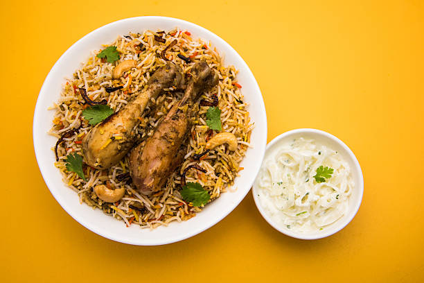

Chicken Biryani Recipe

Description
Chicken Biryani is a delicious and aromatic rice dish that is popular in many parts of the world. It is made by layering marinated chicken and spiced basmati rice, and slow cooking them together to create a flavorful, hearty meal. This recipe is perfect for a special occasion or when you're craving something comforting and filling.
Ingredients
- 2 cups Basmati rice
- 500g Chicken (cut into pieces)
- 1 large Onion (sliced)
- 2 Tomatoes (chopped)
- 1 cup Yogurt
- 2 tbsp Biryani masala
- 1 tsp Turmeric powder
- 1 tsp Red chili powder
- 2 tsp Ginger-garlic paste
- 3 tbsp Oil or Ghee
- Fresh coriander and mint leaves (for garnish)
- 4 cups Water
- Salt (to taste)
Steps
- Wash the rice and soak it in water for 30 minutes. Drain and set aside.
- Heat oil in a large pan and fry the sliced onions until golden brown. Set aside half of the fried onions for garnish.
- Add ginger-garlic paste, turmeric, red chili powder, and biryani masala to the pan. Stir well.
- Add the chicken pieces and cook until they are browned on all sides.
- Add yogurt, chopped tomatoes, and salt. Let the mixture cook until the chicken is fully cooked and the gravy thickens.
- In a separate pot, boil 4 cups of water. Add the soaked rice and cook until 70% done, then drain the water.
- In a large pot, layer half of the rice, then add the cooked chicken mixture, followed by the remaining rice.
- Garnish with fried onions, coriander, and mint leaves. Cover and cook on low heat for 20-25 minutes.
- Once done, fluff the biryani gently and serve hot.